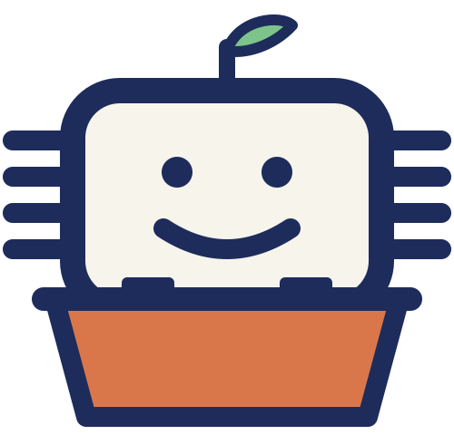

Hi, I'm čipek. Three million numbers, and I fit in your palm. Every lesson is quick, and after each one you keep what you made.
A language model on a chip that fits in your palm · six quick lessons · Kateřina Fajmanová
čipek · 3M Maxwell
Maxwell Franta · 4M
Franta · 4M
kytka · 1M| 1 | The chip writes a program | one command |
| 2 | Pins in: temperature | one command |
| 3 | Pins out: attention in your hand | three solder joints |
| 4 | Wheels | an afternoon |
| 5 | Teach Franta a trick | 3½ min on Colab |
| 6 | A robot of your own | 48 s on Colab |
No cloud once it is flashed · shopping list · the big sibling: a 1.5B model, layer by layer